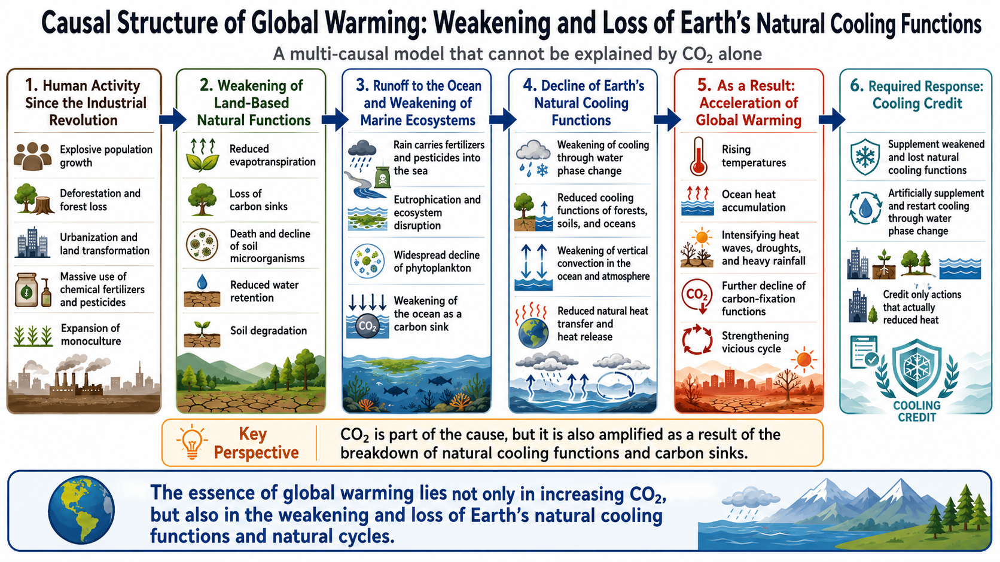
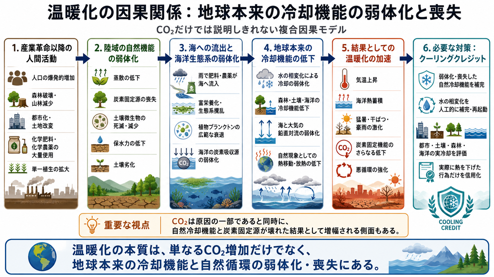
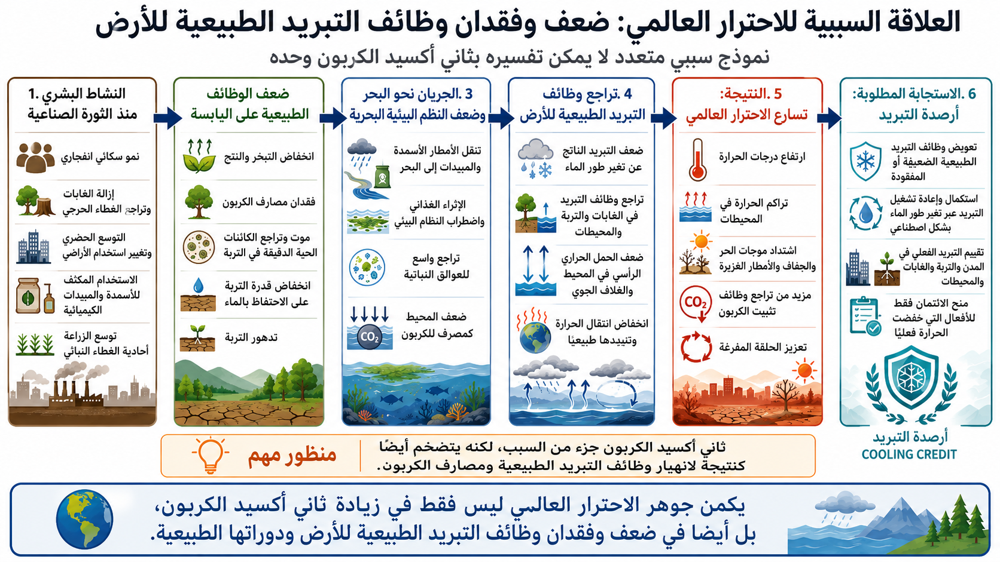

A systems-based model beyond CO₂-only explanations

This repository presents global warming as a systems problem. It argues that warming is driven not only by greenhouse gas accumulation, but also by the weakening and loss of Earth's natural cooling functions, including forests, evapotranspiration, soil microbial systems, marine biological productivity, water cycles, and atmospheric and oceanic circulation.
CO₂ is important, but it is not the whole story. Global warming should also be understood as a crisis of degraded natural cooling capacity.

本リポジトリは、温暖化を単なるCO₂増加だけではなく、地球本来の自然冷却機能の弱体化・喪失を含むシステム問題として整理します。
CO₂は重要ですが、それだけでは全体像は説明しきれません。温暖化は、森林、蒸散、土壌微生物、水循環、海洋生物系、大気・海洋循環といった冷却機能の劣化の問題でもあります。
10年前に気候政策がCO₂削減とカーボンクレジットだけでなく、地球の自然冷却機能の回復・補完にも注力していたら何が変わったか

يقدّم هذا المستودع الاحترار العالمي بوصفه مشكلة نظمية، لا تقتصر على زيادة CO₂ فقط، بل تشمل أيضًا ضعف وفقدان وظائف التبريد الطبيعية للأرض.
CO₂ مهم، لكنه ليس القصة الكاملة. فالاحترار العالمي هو أيضًا أزمة تتعلق بالغابات، والنتح، والتربة، والميكروبات، ودورة الماء، والأنظمة البحرية، والدوران الجوي والمحيطي.